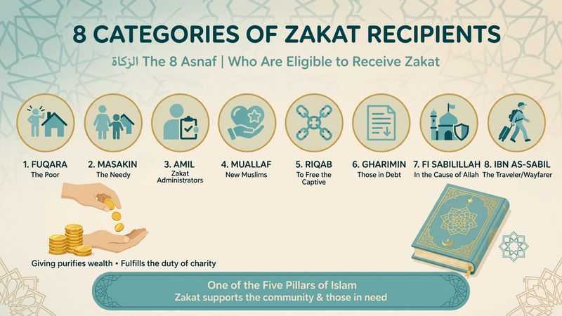

8 Categories of People Eligible for Zakat - Quran 9:60 Complete Guide [2026]

Do you know who can receive your Zakat? Many Muslims in the USA & UK pay Zakat but are not sure who is actually eligible. Allah did not leave this open - He specified exactly 8 categories in Quran 9:60 who can receive Zakat.
In this complete guide, we explain the 8 categories of people eligible for Zakat, what each category means today, Nisab threshold 2026, how to calculate 2.5%, and common mistakes to avoid.
Table of Contents
- What is Zakat and Why 8 Categories?
- Zakat Nisab Threshold 2026
- The 8 Categories of Zakat Recipients - Quran 9:60
- How to Calculate Zakat 2.5% - Simple Formula
- Zakat on Gold, Money, 401k, Stocks
- Who CANNOT Receive Zakat?
- Zakat vs Sadaqah
- FAQs
What is Zakat? Definition and Importance
Zakat is the 3rd Pillar of Islam and obligatory charity. The word Zakat means purification and growth. By giving 2.5% of excess wealth, Allah purifies your wealth and increases Barakah.
Allah says: "Take from their wealth a charity by which you purify them and cause them to increase" Quran 9:103
Zakat is not optional like Sadaqah - it is Fard for every Muslim whose wealth exceeds Nisab and has passed one lunar year (Hawl). See full guide: 5 Pillars of Islam Explained.
Zakat Nisab Threshold 2026 - How Much Requires Zakat?
Nisab is the minimum amount. Below Nisab, no Zakat is due.
Current Nisab Values (September 2026):
- Silver Nisab: 612.36g silver = approx $550 - $650 (most scholars use this - more beneficial for poor)
- Gold Nisab: 85g gold = approx $5,500 - $6,000
Most contemporary scholars in USA & UK advise using Silver Nisab. So if you have $600+ savings for 1 lunar year, you pay Zakat.
The 8 Categories of People Eligible for Zakat - Quran 9:60
Allah says: "Zakah expenditures are only for the poor and for the needy and for those employed to collect [zakah] and for bringing hearts together [for Islam] and for freeing captives [or slaves] and for those in debt and for the cause of Allah and for the [stranded] traveler - an obligation [imposed] by Allah." Quran 9:60
1. Al-Fuqara (الفقراء) - The Poor
Those who have almost nothing. No income or very little. In USA & UK, this includes refugees, homeless Muslims, or families with no income.
2. Al-Masakin (المساكين) - The Needy
Those who have some income but not enough to cover basic needs. Example: a family earning $2,000 but needs $3,500 for rent, food, bills.
3. Al-Amilina Alayha (العاملين عليها) - Zakat Administrators
People employed to collect, manage, and distribute Zakat. Today, trusted Islamic charities and Zakat organizations.
4. Al-Muallafatul Quloob (المؤلفة قلوبهم) - Those Whose Hearts Are to Be Reconciled
New Muslims (reverts) who need support, or non-Muslims close to Islam where giving softens their heart to Islam.
5. Ar-Riqab (الرقاب) - Freeing Slaves / Captives
In modern times: helping free people from modern slavery, human trafficking, or helping Muslims unjustly imprisoned to pay ransom.
6. Al-Gharimin (الغارمين) - Those in Debt
Those overwhelmed with debt for halal needs (not luxury). Example: medical debt, debt to feed family. Condition: debt exceeds their wealth.
7. Fi Sabeelillah (في سبيل الله) - In the Cause of Allah
Students of Islamic knowledge, dawah efforts, building Islamic schools, supporting Islamic studies students who cannot afford fees. See What is Islamic Studies?
8. Ibn As-Sabeel (ابن السبيل) - The Stranded Traveler
A traveler who is stranded and has no money to return home, even if they are rich at home. Includes students stuck abroad or travelers who lost wallet.
📌 Visual Summary: 8 Categories of Zakat
1. Fuqara - The Poor | 2. Masakin - The Needy | 3. Amil - Zakat Admins | 4. Muallaf - New Muslims | 5. Riqab - Free Captives | 6. Gharimin - Those in Debt | 7. Fi Sabeelillah - In Cause of Allah | 8. Ibn As-Sabil - Traveler
All 8 are mentioned in Quran 9:60 - You must give Zakat to at least one of them.
How to Calculate Zakat: 2.5% Formula Made Easy
Formula: Total Zakatable Wealth x 0.025 = Zakat Due
What counts: Cash savings, gold/silver, stocks, crypto held for investment, 401k if accessible, business inventory, money lent expected back.
Example: $10,000 savings + $3,000 gold + $5,000 stocks = $18,000 → Zakat = $18,000 x 2.5% = $450
Set a Zakat anniversary (e.g., 1st Ramadan) and calculate every year on that date (Hawl = 354 days lunar year).
Zakat on Gold, Silver, Money, 401k, and Stocks (USA & UK)
Zakat on Gold:
85g+ gold kept as wealth. If jewelry is daily personal use, some madhabs exempt it. If stored as investment, pay Zakat. Learn more in Fiqh Made Easy.
Zakat on 401k & IRA (USA):
If you can withdraw with penalty, pay on full balance. If locked till retirement, many scholars say pay when you receive it. Consult scholar.
Zakat on Stocks:
Pay on market value if bought to sell. If long-term dividend, pay on dividends saved.
Who CANNOT Receive Zakat?
- Your parents, grandparents, children, grandchildren - you must support them anyway
- Your spouse
- Rich person (above Nisab) unless traveler stranded
- Non-Muslim except Muallafatul Quloob category
- Building masjid - majority of scholars say not from Zakat, use Sadaqah
You CAN give to brother, sister, aunt, uncle, if they are poor and fall in 8 categories.
Zakat vs Sadaqah - Key Differences
| Zakat | Sadaqah |
|---|---|
| Obligatory - 3rd Pillar | Voluntary charity |
| 2.5% fixed rate | Any amount |
| Must meet Nisab + Hawl | Anytime, any amount |
| 8 specific recipients only (Quran 9:60) | Anyone in need |
| Once per lunar year | Anytime |
📚 Continue Learning Islamic Studies
Want to learn Fiqh of Zakat in depth? Join our Islamic Studies Course | Book Free Trial
📚 Explore All Our Islamic Studies Guides
Frequently Asked Questions
Can I give all my Zakat to one category?
Yes, you can give all to one person or one category if needed. You don't have to split among all 8. But distributing is better if possible.
Can I give Zakat to family members?
Yes to brother, sister, aunt, uncle if they are poor (in 8 categories). No to parents, grandparents, children, grandchildren, spouse - you must support them from your own money, not Zakat.
Do I pay Zakat if I have debt?
Deduct immediate debts due now from wealth, then calculate. Long-term mortgage - only one year's payment according to many scholars, not full mortgage.
Can I pay Zakat monthly?
Yes, you can pay in advance monthly and adjust at Hawl date. If you overpaid, it's counted as Sadaqah. If underpaid, pay difference.
Is Zakat on house I live in?
No Zakat on personal home, car, furniture you use daily.
🎓 Master Fiqh of Zakat
Zakat is part of Fiqh of Worship. Learn it step-by-step with a qualified teacher in our Islamic Studies Program.